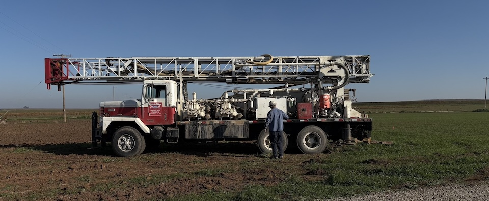

Intro

Hey, thanks for stopping by! I'm Humberto — a PhD candidate at UC Merced working at the intersection of hydrology, applied geophysics, and agricultural water management.
This site is a running record of my research and work. If you want to connect or catch a typo, drop me a message.
About
I'm a PhD candidate in the Environmental Systems Graduate Group at UC Merced, specializing in hydrology and water resources engineering. I expect to defend in 2026. Before my PhD I completed my M.S. (2024) and B.S. in Environmental Engineering (2020) — both at UC Merced, where I graduated with high honors and won the outstanding student award and best capstone project in Environmental Engineering.
My research is rooted in a simple belief: the science we produce should reach the people who need it. Outside the lab I serve on the Board of Directors of the SocioEnvironmental and Education Network (SEEN), a nonprofit where I help coordinate workshops and educational programs on scientific topics for K–12 students from disadvantaged communities. Since 2021 we've secured approximately $1.5 million in funding for educational and community programs.
I'm fluent in English and Spanish, which matters a lot for the community-engaged and extension work I do across the San Joaquin Valley.
Also, I love pugs. That's Dookie up there.
Research

Dissertation
My dissertation addresses a core barrier to on-farm groundwater recharge: the lack of rapid, cost-effective methods to determine land suitability for Managed Aquifer Recharge (MAR). Working at UC Merced's experimental smart farm, I developed and validated a farm-scale characterization workflow that pairs a towed transient electromagnetic (tTEM) geophysical survey with direct soil sampling to produce a continuous 3D subsurface suitability model.
A key finding was identifying a shallow perched aquifer — a storage target largely overlooked in San Joaquin Valley MAR literature. Building on the geophysical model, I constructed two recharge basins with contrasting suitability to validate the interpretation, quantify recharge contributions, and develop engineering solutions to bypass restrictive clay layers. This concept, micro-scale MAR (μMAR), has direct implications for expanding distributed recharge capacity across overdrafted subbasins.
Research Focus Areas
- Managed Aquifer Recharge (MAR) & infiltration basin design
- Applied geophysics for subsurface characterization (tTEM, AEM)
- Field monitoring — groundwater quantity and quality
- Geospatial decision-support tools for growers, water districts, and GSAs
- Groundwater sustainability planning under SGMA
- Community-engaged and extension research
Selected Publications
- Flores-Landeros, H. et al. (2026). Low-cost CO₂ sensors reveal seasonal and management-driven soil carbon fluxes in a Mediterranean agroecosystem. Environmental Technology & Innovation, 41, 104743.
- Nuñez-Bolaño, Y., Flores-Landeros, H. et al. (2025). A participatory approach for developing a geospatial toolkit for mapping MLRP suitability in California. Frontiers in Water, 7, 1539834.
- Flores-Landeros, H. et al. (2021). Community Perspectives and Environmental Justice in California's San Joaquin Valley. Environmental Justice.
Conference Presentations
- μMAR: Micro-Scale Managed Aquifer Recharge in Shallow Hydrogeological Units — AGU 2025
- Advancing Farm-Scale Groundwater Recharge via Electromagnetic Geophysics — LACA 2024
- Distributed Carbon Dioxide Flux Assessment in Agricultural Soils — AGU 2023
Tools
Some web apps I helped develop for Multibenefit Land Repurposing suitability assessment across California's San Joaquin Valley.
Merced Subbasin MLRP Suitability
An interactive geospatial toolkit for exploring Multibenefit Land Repurposing Program (MLRP) suitability in the Merced subbasin.
Additional Tools
-
Tule Subbasin MLRP Suitability
Geospatial decision-support toolkit for the Tule subbasin.
Open app →
-
Kaweah Subbasin MLRP Suitability
Geospatial decision-support toolkit for the Kaweah subbasin.
Open app →
Photos
A few images from the field and beyond.
Taken on Nikon ZF 26mm lense
Contact